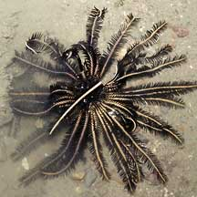
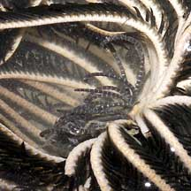
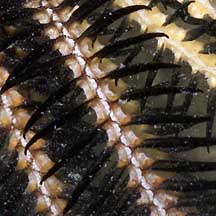
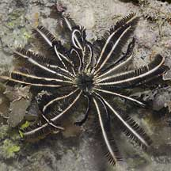
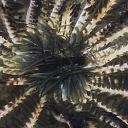
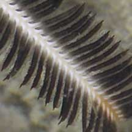

|
|
| crinoids text index | photo index |
| Phylum Echinodermata > Class Crinoidea > Order Comatulida |
| Black-and-white
feather star awaiting identification* updated Oct 2016 Where seen? This elegant black-and-white feather star is sometimes seen, on coral rubble and near living reefs on undisturbed shores. Features: 10-12cm in diameter with arms. Black pinnules on pale arms. More than 20 arms. On the upperside, the central disk is covered with many dark to black pinnules. The cirri on the underside is banded. |
 Beting Bronok, Aug 05 |
 Underside |
 Close-up look at arms. |
|
 Raffles Lighthouse, Jun 07 |
 |
 Fine feeding tentacles on pinnules. |
*Species are difficult to positively identify without close examination.
On this website, they are grouped by large external features for convenience of display.
| Black-and-white feathers stars on Singapore shores |
On wildsingapore
flickr
|
| Other sightings on Singapore shores |